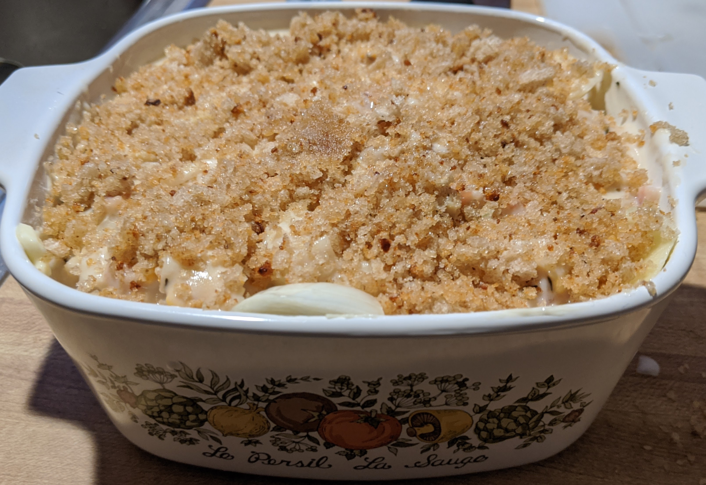

Deconstructed Clam Chowder

Recipe Description
Potatoes are sliced and parcooked, then layered with a cream sauce made with
bacon, clams, and onion. The Casserole is then topped with a butter and bread crumb topping and baked
until bubbling and golden brown on top.
Recipe makes one 6 x 6 x 2 inch casserole
Ingredients
- 2 Large Russet Potatoes, washed and sliced into 1/4" slices
- For Clam Sauce
- 1 12oz Can Evaporated Milk
- 1.5 T Butter
- 2 T Flour
- 1 Medium Onion, Minced
- 2 Strips Bacon
- 1 6.5oz can Bar Harbor Brand Chopped or Minced Clams
- For Crumb Topping
- 2 T butter
- 1 C Bread Crumbs
Directions
- Preheat oven to 350 F
- Bring one large pot of salted water to a boil
- Fry 2 strips bacon in a seperate sauce pot
- Cook potatoes in boiling water for 3 minutes, rinse with cold water and drain
- When bacon is cooked, remove from sauce pot, add onion a and 1.5 T butter
- Cook onion until soft, and 2T flour and whisk into a roux
- Cook roux for two minutes
- Slowly add milk and reserved clam juice while whisking to make sauce
- Add clams and remove from heat
- Layer potatoes and clam sauce into casserole
- Melt 2 T butter in a small pan and toss with breadcrumbs to coat
- Layer breadcrumbs on top of casserole
- Bake for 25 minutes or until bubbling and golden brown on top